Le bootfitting
Artisan au service de vos pieds : analyse du pied et de la posture, puis adaptation de vos chaussures pour plus de plaisir et de confort.
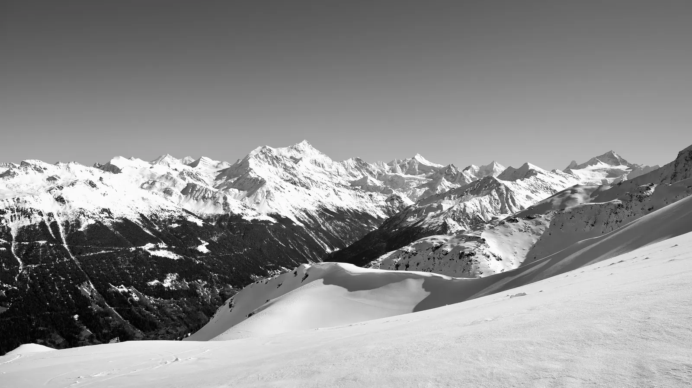
Vercorin · Val d'Anniviers · Valais
Virage Sport vous accueille à Vercorin pour la vente et la location de matériel de ski, avec un service de bootfitting pour des chaussures à votre pied et un atelier pour l'entretien de votre matériel.
Bienvenue
Qualité et professionnalisme sont au cœur de Virage Sport. Spécialisée dans la vente et la location de matériel de ski à Vercorin, notre équipe se fera un plaisir de vous conseiller pour la pratique de votre sport et de toutes vos activités outdoor.
Artisan au service de vos pieds : analyse du pied et de la posture, puis adaptation de vos chaussures pour plus de plaisir et de confort.
Nous préparons votre matériel pour plus de plaisir et de sécurité. Tous les services sont effectués dans les plus brefs délais.
Le service est adapté à la taille et aux compétences des enfants. Les juniors peuvent aussi louer du matériel de randonnée et de télémark dès 120 cm.
Location
Matériel de première qualité et en parfait état, entretenu sur les machines les plus modernes. Traitement 100 % hygiénique des chaussures. Location Intersport Rent à la journée ou à la semaine. Prix pour un jour et pour six jours : tarifs d'hiver indicatifs — [À CONFIRMER].
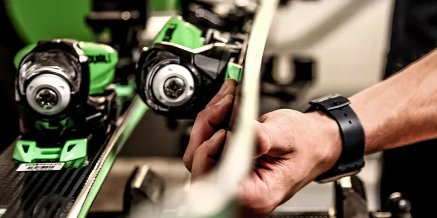
Grâce à notre atelier équipé à la pointe, nous effectuons tous les services sur vos skis et snowboards dans les plus brefs délais.
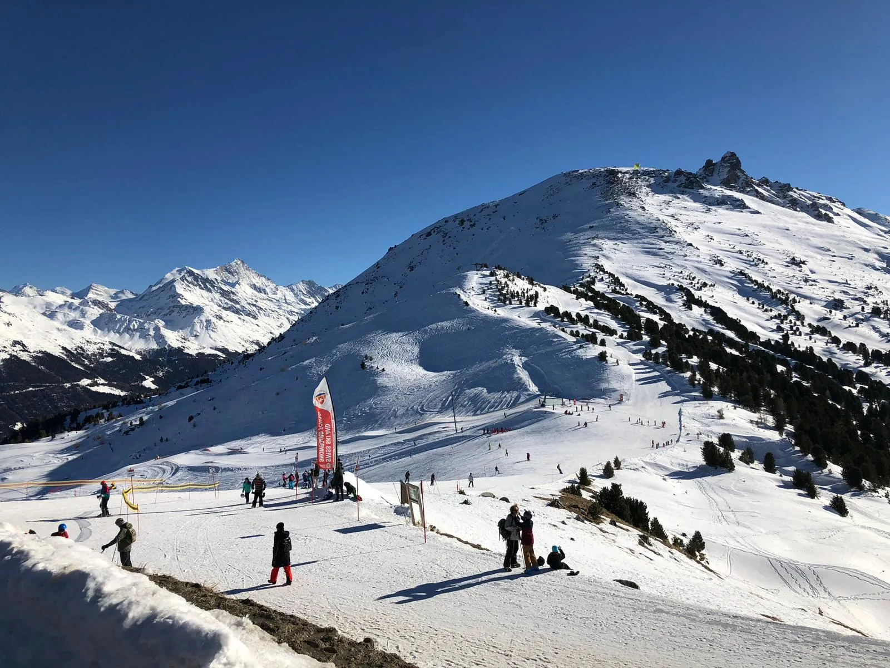
Possibilité de louer votre matériel de ski à la saison : nous garantissons les locations jusqu'au 20 décembre, ensuite uniquement sur réservation. Louer ou acheter ? Pour les ados, nous proposons du matériel neuf en location, avec une option de rachat en fin de saison.
Bootfitting
Votre confort, notre priorité. Le bootfitting professionnel de Virage Sport prend le temps de définir avec vous vos besoins et de vous conseiller les meilleures chaussures parmi notre large éventail.
À l'écoute de vos besoins, nous prenons en compte votre bilan de skieur : niveau, objectifs, fréquence de ski…
Analyse de vos pieds et de votre posture, en statique et en dynamique.
Différents choix de chaussures, de prix et d'adaptations. Puis préparation des chaussures (semelles, chaussons…), essayage et peaufinage selon besoin.
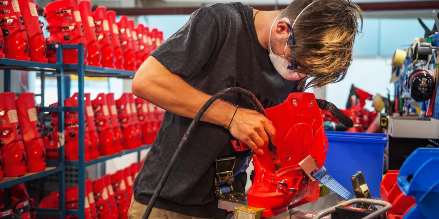
Nous travaillons uniquement sur rendez-vous, afin de vous offrir un service précis et 100 % personnalisé. Prenez rendez-vous en ligne ou appelez-nous au 027 455 87 00.
Réservation
La location en ligne de Virage Sport se fait avec Intersport Rent, à la journée ou à la semaine.
Sur la page Virage Sport d'Intersport Rent, choisissez vos dates, puis votre matériel, et finalisez votre réservation. La réservation en ligne est disponible jusqu'à 48 h avant la location. Vous préférez parler à quelqu'un ? Appelez le magasin.
Grille complète
Prix en francs suisses (CHF), par personne. Atelier et location d'été : tarifs officiels publiés sur virage.ch (été 2026). Location de ski : Virage Sport ne publie pas ses prix, le tarif exact s'affiche lors de la réservation sur Intersport Rent.
Tarifs indicatifs — [À CONFIRMER]
La réservation en ligne sur Intersport Rent est disponible jusqu'à 48 h avant votre location.
Location à la saison : locations garanties jusqu'au 20 décembre, ensuite uniquement sur réservation.
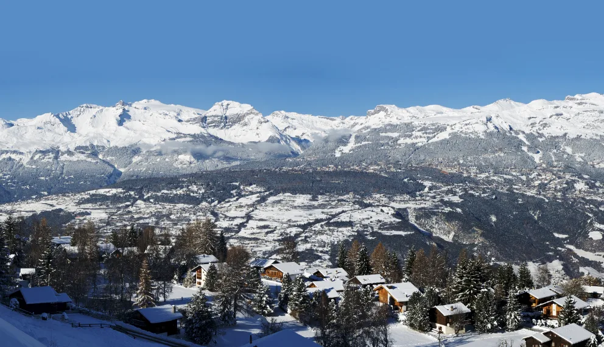
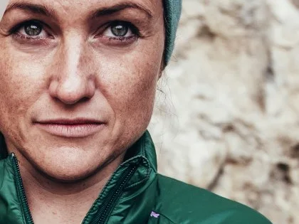
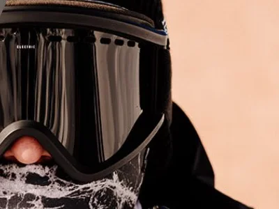
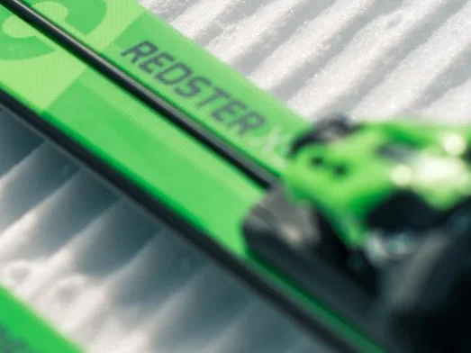
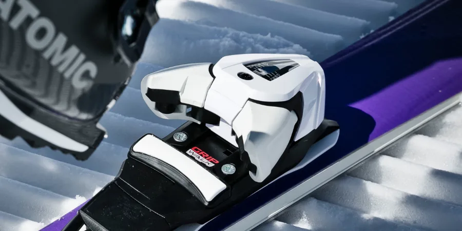
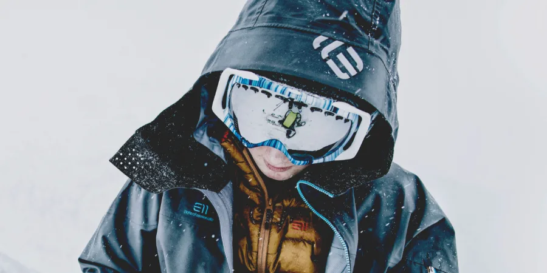
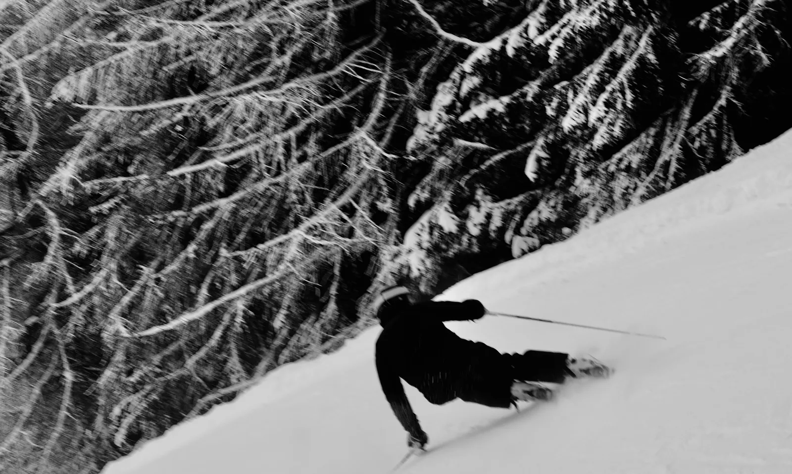
Les magasins
Afin de mieux vous servir, Virage Sport vous accueille dans ses deux points de vente : au centre du village de Vercorin et au pied de la télécabine. Nous vous équipons pour toutes vos activités outdoor, y compris le ski de randonnée et le télémark.
Accès